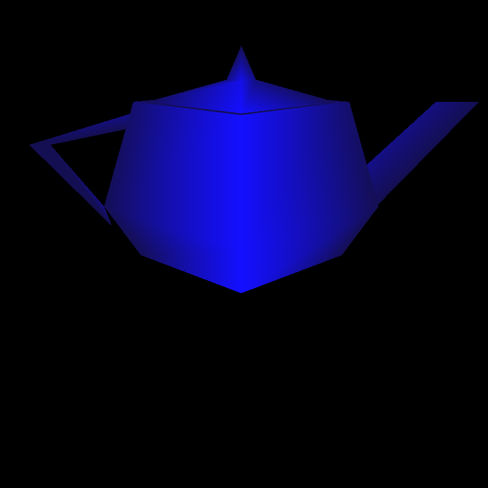
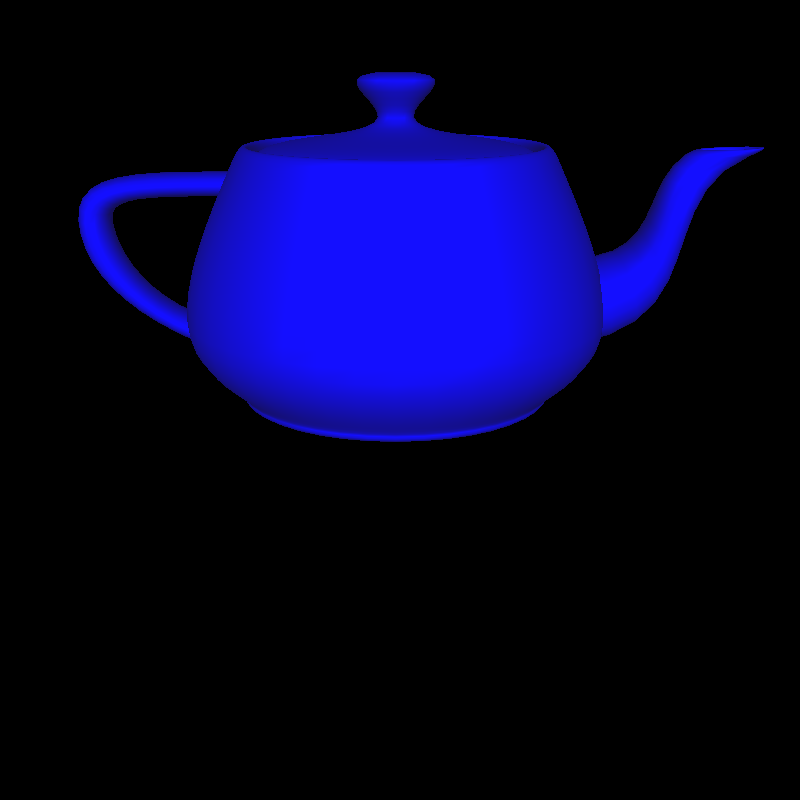
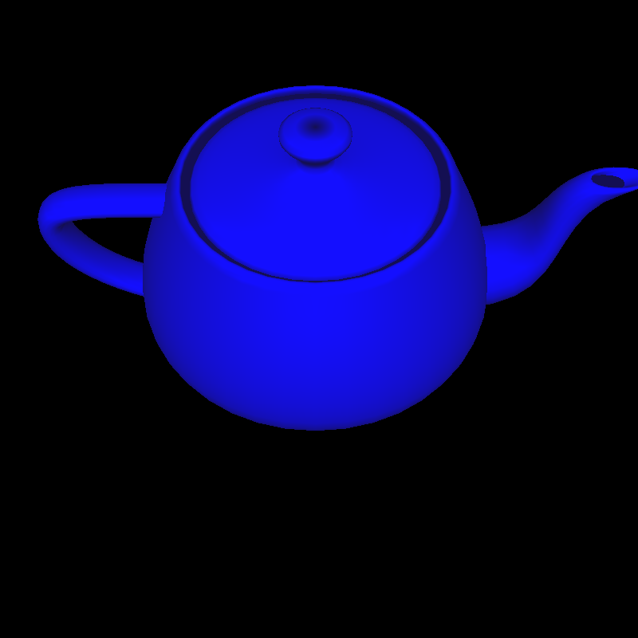
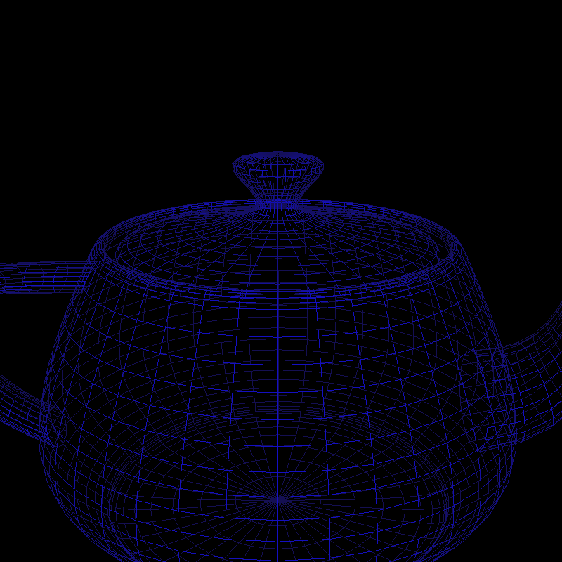
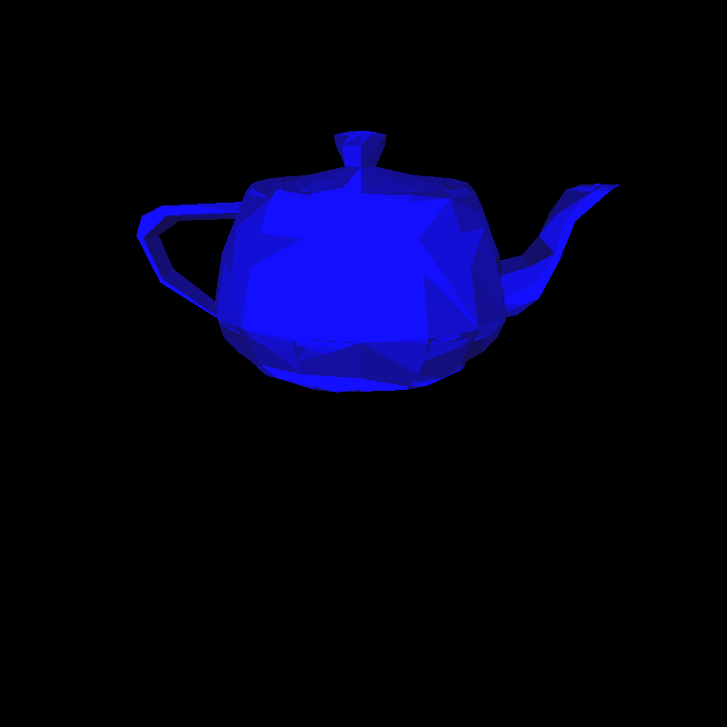
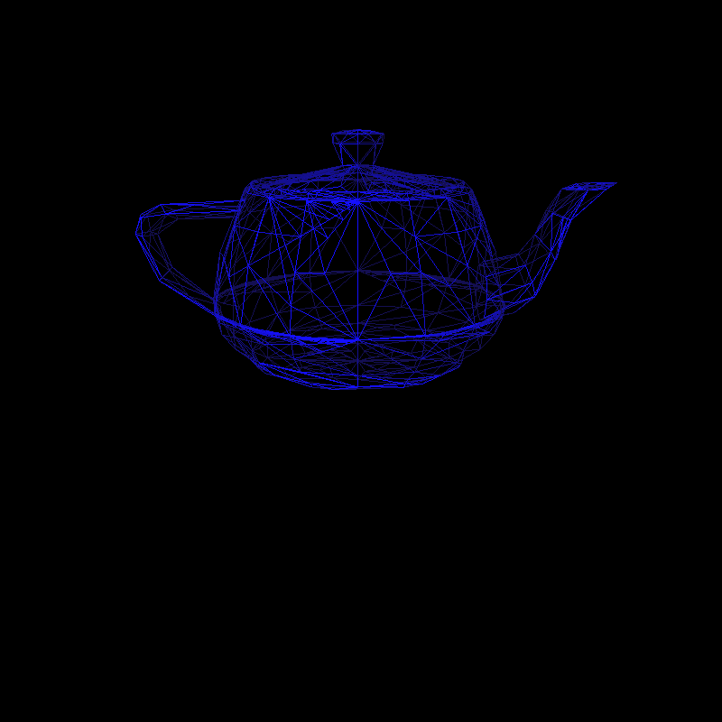
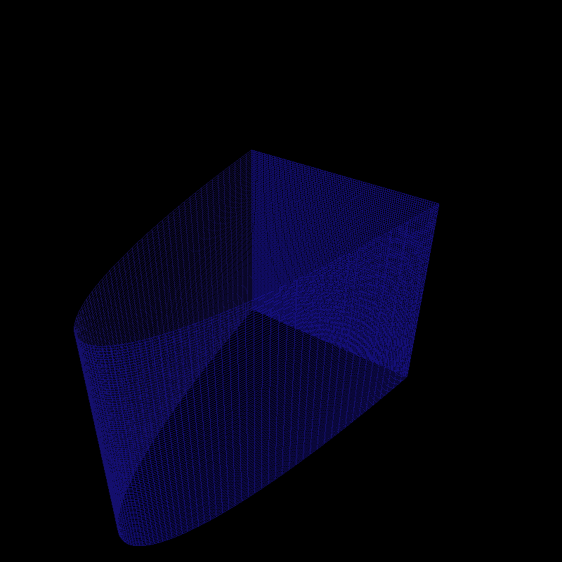
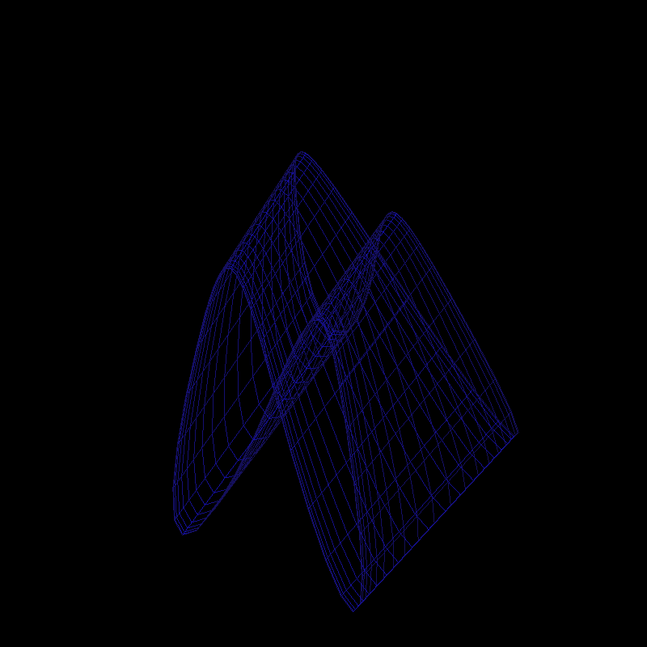
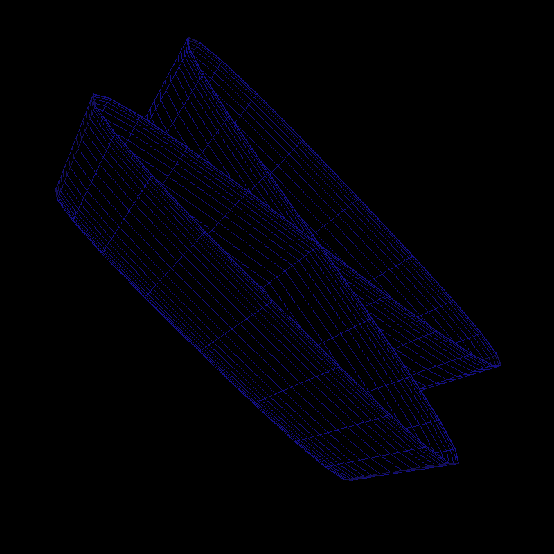

This is my assignment 3, the implicit surface modeller using OpenGL. Beyond the requirements, hidden line removal is also implemented.
Smooth shading teapot plotted directly.

Smooth shading, teapot plotted with finer subdivision.
Same teapot, but rotated.

Same teapot, but rendered in mesh instead of filled.
Teapot rendered with adaptive tesselation using a large subdivision parameter.
Same rendering the mesh.

The arch with adapative tessellation with large subdivision parameter.
The arch with uniform subdivision with very small subdivision parameter, in mesh form.
An elongated hollow bow, rendered with a very small subdivision paramater.
Same, but rendered in mesh mode.
Same, but rendered in mesh mode with hidden line removal on.
A video of all of the features.